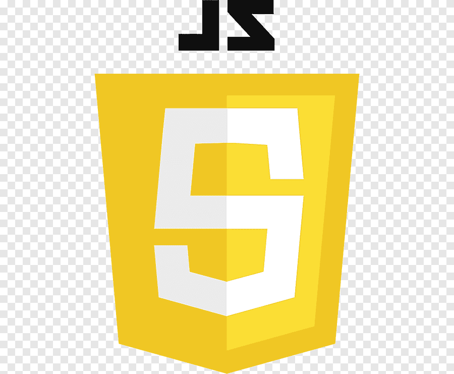
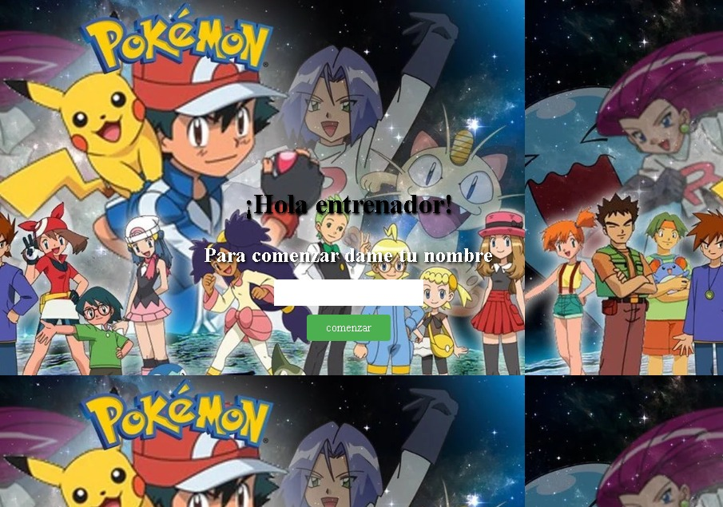
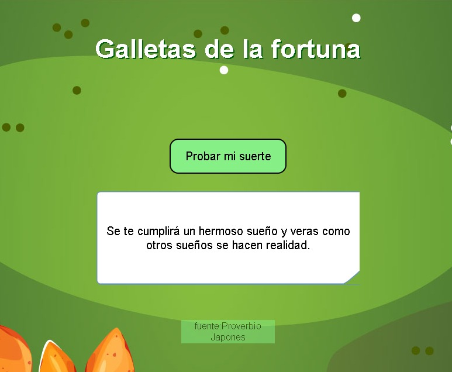
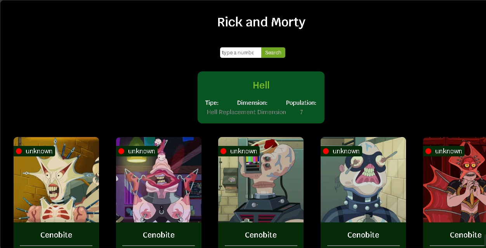
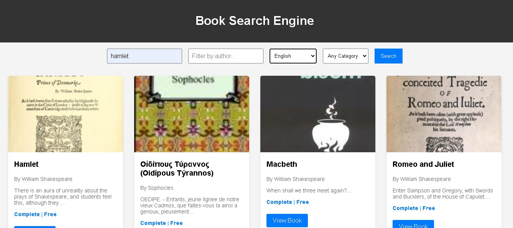

¡Hola, soy Carlos Mario Rendón!
Soy un Desarrollador Web Full-Stack apasionado de la tecnología y un entusiasta de los nuevos proyectos...

HTML

CSS

JavaScript

React

Node.js
PostgreSQL
Soy un Desarrollador Web Full-Stack apasionado de la tecnología y un entusiasta de los nuevos proyectos...
HTML
CSS

JavaScript
React
Node.js
PostgreSQL

Aplicación web desarrollada con React, HTML, CSS, y Axios para consumir la PokeAPI. La aplicación permite consultar y mostrar información de diferentes Pokémon en tiempo real. Se utilizó Axios para manejar las solicitudes HTTP a la API, y React para estructurar y renderizar dinámicamente los datos obtenidos. Además, se diseñó una interfaz responsiva y visualmente atractiva mediante CSS. El proyecto incluye maquetación optimizada y componentes reutilizables para mejorar la organización del código.
Ver en GitHub Ver Proyecto
Desarrollada utilizando React, HTML, CSS, y Axios, logrando un producto dinámico y eficiente. Se empleó Axios para realizar solicitudes HTTP, permitiendo una conectividad rápida y fluida con servicios externos. Gracias a React, los datos obtenidos se estructuran y renderizan de manera dinámica, lo que facilita una experiencia interactiva y en tiempo real. Además, se prestó especial atención al diseño visual y la responsividad, creando una interfaz atractiva y adaptable mediante un maquetado optimizado en CSS. El proyecto también destaca por el uso de componentes reutilizables
Ver en GitHub Ver Proyecto
La aplicación web de personajes de Rick and Morty fue desarrollada utilizando React, HTML, CSS, y Axios para consumir la API oficial de la serie. Se utilizó Axios para realizar solicitudes HTTP, permitiendo obtener y mostrar en tiempo real la información de los personajes.cuenta con una interfaz visualmente atractiva y responsiva, lograda mediante un maquetado en CSS que asegura que la aplicación se vea bien en distintos dispositivos. Asimismo, se implementaron componentes reutilizables para mejorar la organización y facilitar el mantenimiento del código.
Ver en GitHub Ver Proyecto
Buscador de Libros en Internet fue desarrollado utilizando HTML, CSS, y JavaScript, aprovechando APIs públicas de plataformas conocidas para realizar las búsquedas de libros. La aplicación permite a los usuarios filtrar los resultados según diferentes criterios, mejorando la experiencia de búsqueda. El diseño en CSS proporciona una estructura clara y amigable para el usuario, mientras que la lógica de filtrado y la obtención de datos se desarrollaron con JavaScript, lo que garantiza una interacción fluida y en tiempo real con las APIs.
Ver en GitHub Ver Proyecto